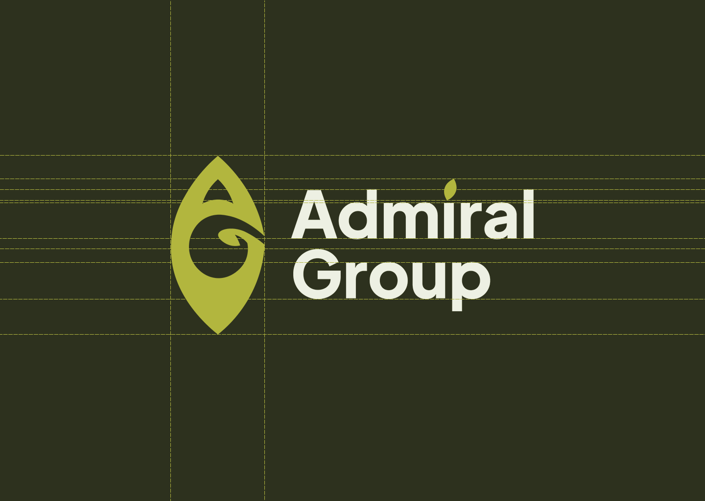
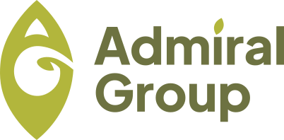
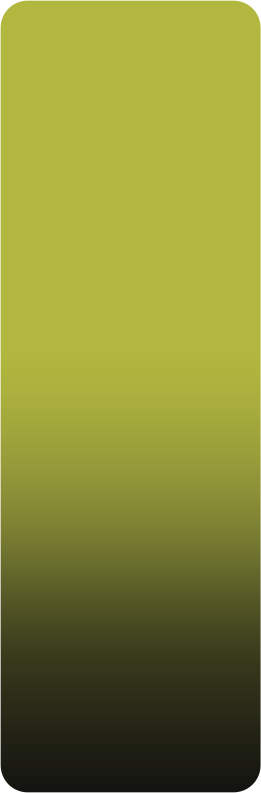
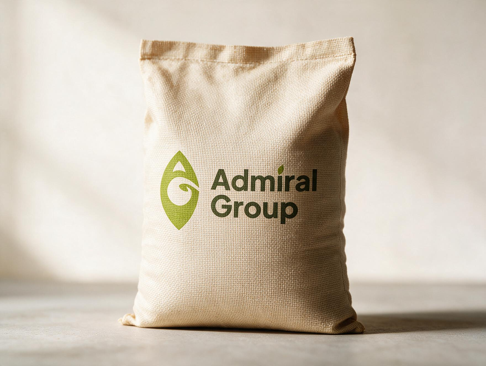
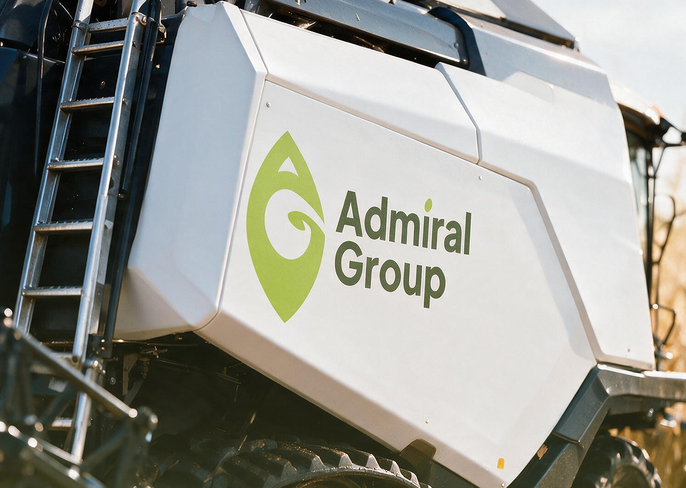
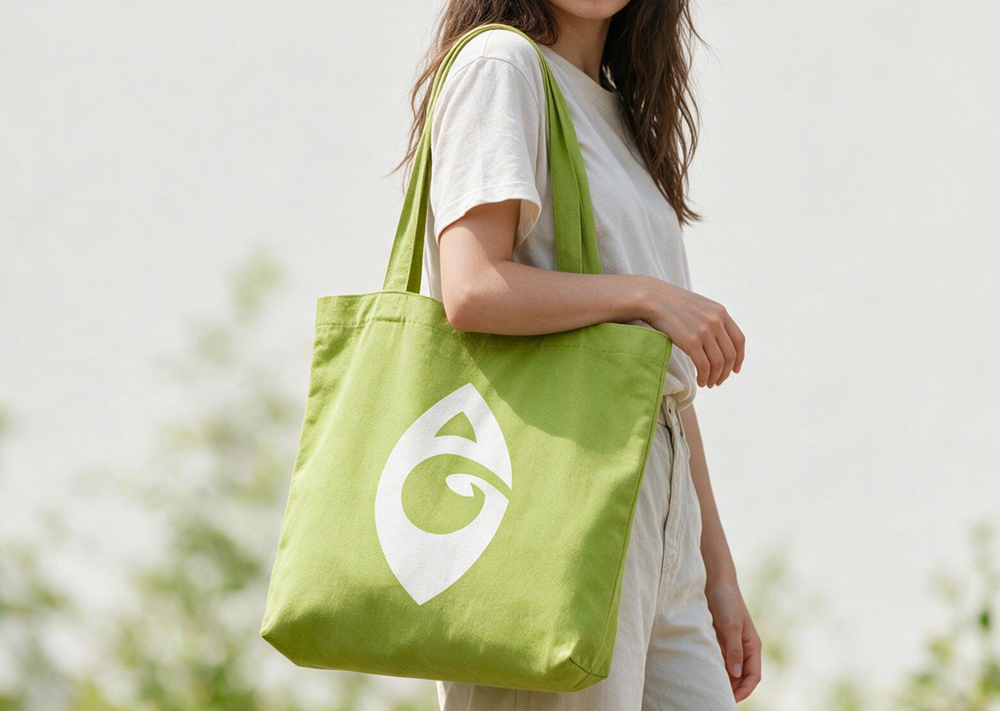
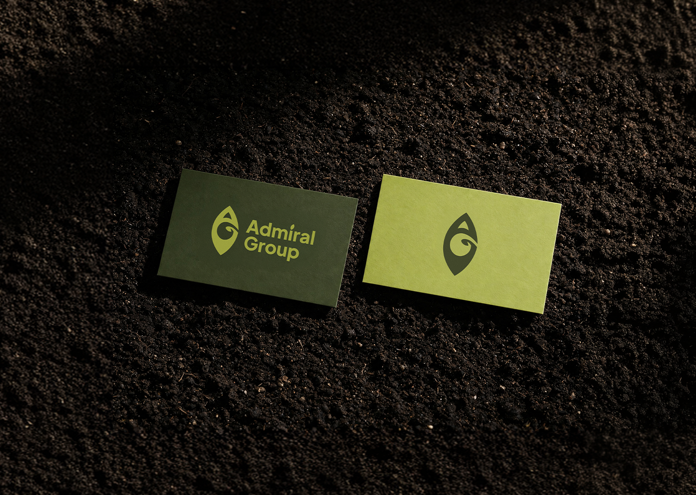
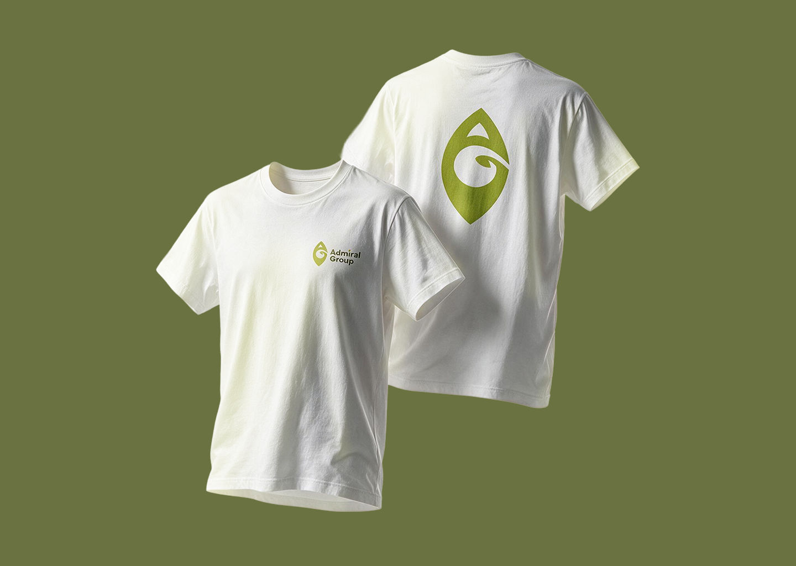

Project Overview
A visual identity for Admiral Group, an agricultural company focused on grain storage. The identity combines a strong corporate presence with visual references to grain, growth and agriculture.
Visual System
The identity draws from the visual language of agriculture — grain, vegetation, growth and the natural textures of the field. These organic references are balanced by a strong corporate presence, creating a visual direction that feels grounded, contemporary and recognisable.
The logo system brings these ideas into a flexible visual language, allowing the symbol and wordmark to work independently or together across different formats and scales. Early exploration focused on finding a balance between organic forms and geometric structure, with the final mark developing from this relationship.


Color Palette
A grounded palette inspired by grain fields, vegetation and soil. Fresh green brings energy to the identity, while deeper olive tones add stability and an established character.

Typography
The identity uses Plus Jakarta Sans, a geometric sans serif that brings clarity and structure to the visual system.
Its clean forms create a deliberate contrast with the organic character of the logo, giving the identity a contemporary and recognisable voice.
Plus Jakarta Sans
Brand Applications
The identity extends beyond the core mark into physical and environmental applications, allowing the visual system to live across different materials, objects and real-world contexts.




